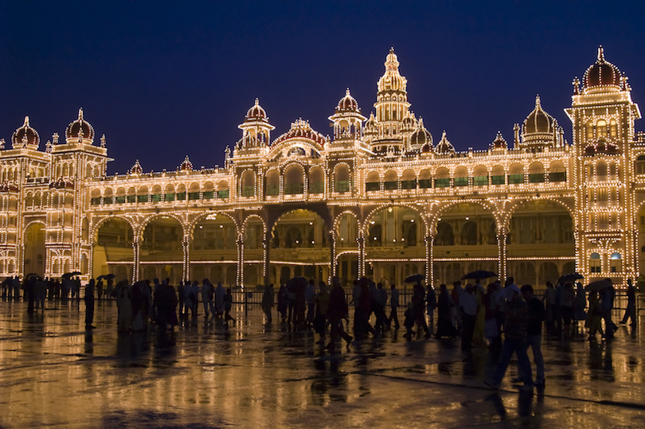

In the southern tip of India, you’ll find the city of Mysore. Once the capital of the Wodeyar dynasty, Mysore is best known for housing the magnificent Mysore Palace. The palace is the epitome of opulence, and a tour through the structure will reveal upscale touches like carved rosewood doors, ceilings decorated in ivory and countless paintings on the walls. If you’re in Mysore, you won’t want to miss the incredible Devaraja Market, an outdoor experience on Dhanwanthri Road where you can buy some chai tea and then browse stalls offering produce or sandalwood carvings.
2. Amritsar
In the northern province of Punjab is Amritsar, a holy city and a mecca for the Sikh religion. The main attraction in Amritsar is the Golden Temple, also known as the Harmandir Sahib. Built more than 400 years ago, this temple truly is golden, and it is always packed with Sikhs visiting from around India and the rest of the world. You can tour the Golden Temple regardless of religion, but you will need to show respect by covering your head and removing your shoes. Enter the temple through the Ghanta Ghar, the main entrance, and admire the Amrit Sarovar, a pool surrounding the temple where pilgrims bathe.
3. Ladakh
In northernmost India, in the heavily disputed Kashmir region, is the mountainous destination of Ladakh. This region is large, but it has a low population density and a number of nomadic residents. Breathtaking, pristine scenery is a major draw to the area, but virtually all travelers will also spend time in the town of Leh. The town is located at a very high elevation, and it is also home to the 17th century Palace of the King of Ladakh. Buddhist culture is also prominent in Leh, and you may wish to explore some of the many Buddhist monasteries and temples in the Old Town.
4. Goa Beaches
On the western coast of India is Goa, a former colony of Portugal that blends Indian culture with colonial influences and plenty of international tourism. Goa is popular largely because of its spectacular beaches. The busiest and most popular of all is Candolim Beach, where travelers from around the world flock to soak up the sun. Anjuna Beach, by contrast, is far less crowded. It is also an amazing place where you can walk to Chapora Fort and admire the sandy coastline from a new perspective. Palolem is considered one of the most beautiful beaches in all of Goa with it’s natural bay surrounded by lofty headlands on either sides. Goa is widely loved by adventurers, and recreational activities are plentiful for those eager for some fun in the sun.
5. Delhi
If you’re spending any time in Northern India, you will almost certainly visit the capital city of Delhi. The enormous sprawling destination is home to several districts, and it is considered to be one of the oldest cities in the world. One of the top sights in Delhi is the Red Fort, or Lal Qila, which was built in the 17th century. The Red Fort is made from sandstone, and you will be able to walk through its Lahore Gate, into the bazaar, through the jewel palace and even into the former residence of the sultan. While in Delhi, you should also make time for the many museums and religious structures that make up the city.
6. Ellora & Ajanta Caves
In the state of Maharashtra, you can explore the caves of both Ellora and Ajanta. At Ellora, there is an enormous complex of shrines carved from the rocky landscape. These 34 cave shrines are up to 1,500 years old, and they are from three distinct religions: Buddhism, Jainism and Hinduism. Two hours away is Ajanta, which is also home to 29 caves. The Ajanta caves are covered in murals and paintings, most of which reflect Buddhist stories. While the two cave complexes are two hours away from one another, it is well worth visiting both to compare these incredible attractions.
7. Varanasi
With a history dating back to more than 3,000 years, Varanasi is one of the world’s oldest living cities. Located in North India on the banks of the River Ganges, Varanasi has been an important center of learning for ages as well as a chief pilgrimage destination for many Hindus. Varanasi is regarded as a sacred city among Hindus, Jains and Buddhists because it is believed that dying here releases a person’s soul from the cycle of reincarnation, and that bathing in the River Ganges cleanses one’s sins.
Varanasi offers sights and experiences unknown anywhere else in the world. It is nicknamed the “City of Temples” because of its thousands of temples. Some of the most significant are the Kashi Vishwanath Temple of Shiva, the Durga Temple and the Sankat Mochan Hanuman Temple, which is known for housing numerous monkeys.
Probably the most famous sites of the city are the ghats, the series of embankment steps leading down to the Ganges River, where many people gather to bathe. The oldest and main ghat is the Dashashwamedh Ghat. The Manikarnika Ghat is a burning ghat where Hindu cremations and rituals of death anniversaries are frequently held. Yoga, shaves and massages are other activities available here. The best way to see the ghats is by taking a morning boat ride at sunrise.
Silk weaving is popular in Varanasi, and there are scores of shops and markets selling silk products like sarees and scarves in addition to other handicrafts.
8. Kerala
The southwestern state of India known as Kerala is a place of tropical beauty. Palm trees, white sand beaches and eco-tourism are all big reasons to explore the region. Besides its famous backwaters, elegant houseboats and temple festivals, Kerala is also home to Thekkady, a tiger preserve which allows you to admire flora and fauna without crowds. The hub of Kerala is the city of Kochi, where you can see the local fishing industry thriving along with modern high-rises and colonial architecture. Kochi is ethnically and religiously diverse, and in a single afternoon you can explore a Jewish synagogue, a Dutch palace, the Portuguese Pallipuram Fort and the Hindu Thrikkakara Temple.
9. Agra
Agra is one of the most-visited cities in all of India. Once the capital of the Mughal Empire, Agra is now home to the iconic structure known as the Taj Mahal. The white marble mausoleum was built in the 17th century, and it is widely regarded as a monument of love. While spectacularly beautiful, the Taj Majal can be very crowded. Also worth seeing in Agra is the Agra Fort, which is very similar to the Red Fort of Delhi. You can tour this 16th century fort and even explore the interior of its beautiful palace.
10. Rajasthan
Northwest India is where you’ll find the state of Rajasthan, which borders Pakistan and is home to the Thar Desert. Whether you’re interested in Rajput history or views of the Aravallis Mountains, Rajasthan contains some of the best places to visit in India. Jaipur, or the Pink City, is the capital of Rajasthan and a wonderful place to begin your trip. It is home to an array of incredible architecture, including three forts, many temples and the extraordinary City Palace. Also in Rajasthan and worth visiting is Jodhpur, the so-called Blue City that is the gateway to the Thar Desert as well as the home to the spectacular Mehrangarh Fort.